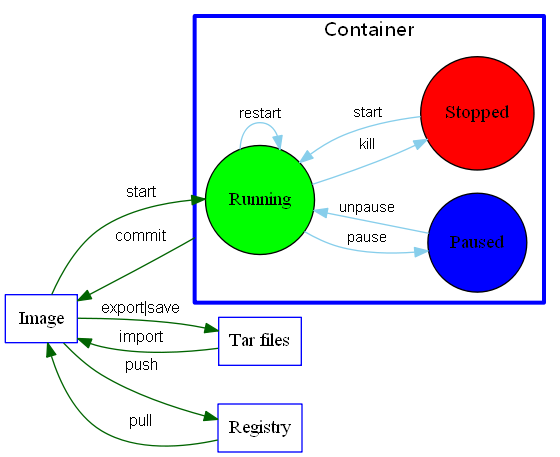

链接：https://lujw666.gitbook.io/learn/docker/00-basic/08-ming-ling

容器生命周期管理
- run 创建一个新的容器并运行一个命令
- start/stop/restart 启动/停止/重启一个容器
- kill 杀掉一个运行中的容器
- rm 删除一个或多个容器
- pause/unpause 暂停/恢复容器中所有的进程
- create 创建一个新的容器但不启动它
- exec 在运行的容器中执行命令
容器操作
- ps 列出容器
- inspect 获取容器/镜像的元数据
- top 查看容器中运行的进程信息
- attach 连接到正在运行中的容器
- events 从服务器获取实时事件
- logs 获取容器的日志
- wait 阻塞运行直到容器停止，然后打印出它的退出代码
- export 将文件系统作为一个tar归档文件导出到STDOUT
- port 列出指定的容器的端口映射
容器rootfs命令
- commit 从容器创建一个新的镜像
- cp 用于容器与主机之间的数据拷贝
- diff 检查容器里文件结构的更改
镜像仓库
- login/logout 登陆/登出Docker镜像仓库
- pull 从镜像仓库中拉取或者更新指定镜像
- push 将本地的镜像上传到镜像仓库
- search 从Docker Hub查找镜像
本地镜像管理
- images 列出本地镜像
- rmi 删除本地一个或多少镜像
- tag 标记本地镜像，将其归入某一仓库
- build 用于使用 Dockerfile 创建镜像
- history 查看指定镜像的创建历史
- save 将指定镜像保存成 tar 归档文件
- load 导入使用 docker save 命令导出的镜像
- import 从归档文件中创建镜像